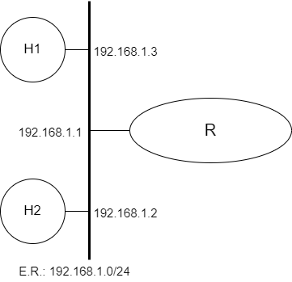

Introdução às Redes de Computadores

Prática de Laboratório 01
Introdução às Redes de Computadores
Introdução
Algumas configurações básicas necessárias para o correto funcionamento de equipamentos conectados a redes.
Objetivos
- Compreender as configurações básicas para navegabilidade em uma rede de computadores.
- Exercitar configurações básicas em diferentes sistemas operacionais e entender como usar ferramentas de diagnóstico para validar configurações.
Teoria abordada no experimento
Funcionamento básico de uma rede TCP/IP.
Material Necessário
- Interfaces de rede (NIC's)
- Máquinas com sistema FreeBSD
- Cabos de rede – par trançado normal
- Switches ou HUBs
- Software nas máquinas: ambiente FreeBSD básico
- Acesso à Internet – NÃO é necessário
- Desligar o servidor e cliente DHCP para as máquinas do experimento
Roteiro
1. Montagem de rede interconectada para o experimento
- H1 (192.168.1.3), H2 (192.168.1.2) e R/eth0 (192.168.1.1).

2. Configurar os clientes na rede de testes.
No FreeBSD, configure o arquivo rc.conf (/etc/rc.conf) e ponha a interface em questão configurável de forma estática, modificando o arquivo para que ele fique semelhante as linhas abaixo:
hostname=”freebsd”
ifconfig_em0=”inet 192.0.2.7 netmask 255.255.255.0”
ifconfig_em0_ipv6=”inet6 accept_rtadv”
sshd_enable=”YES”
# Set dumpdev to “AUTO” to enable crash dumps, “NO” to disable
dumpdev=”AUTO”
defaultrouter=”192.0.2.254”
É possível que o equipamento usado para testes possua uma designação de interface de rede diferente de em0. É praxe em0 ser vinculada à primeira interface de rede Ethernet do computador que executa o kernel do FreeBSD.
Dispondo de privilégios de superusuário, execute o seguinte comando para forçar a configuração da mesma:
$ ./etc/netstart <interface>
Em seguida, para verificar o endereço configurado, use o comando:
$ ifconfig
Também é possível executar os seguintes comandos para configuração das interfaces de rede:
$ # ifconfig interface-name IP-address netmask Netmask
$ ifconfig em0 192.168.133.250 netmask 255.255.255.0
$ route add default 192.168.133.1
$ route -n
3. Validando as configurações
Confira a conectividade básica enviando pacotes ICMP para algum outro computador que esteja conectado à mesma rede:
$ ping <IP-address>
Confira as configurações de roteamento enviando pacotes ICMP para algum outro computador que esteja conectado à outra rede.
$ ping <IP-address>
Como proceder para configurar o esquema de resolução de nomes?
Obs.: Esse tipo de configuração explorada no experimento é chamada de Manual ou Estática.
Questões para Estudo
- Há alguma forma mais simples de se realizar a configuração dos equipamentos para que sejam devidamente conectados à rede?
- Qual é a lista mínima de informações necessárias para que determinado equipamento fique plenamente operacional em uma rede?
- O que acontece quando alguma das informações necessárias é suprimida? Elabore melhor os cenários.
Referências Bibliográficas
RAINVILLE, Shane. How to configure network settings in FreeBSD. Serverlab, 2020. Disponível em: <https://www.serverlab.ca/tutorials/unix/how-to-set-static-ip-and-dhcp-in-freebsd/>. Acesso em: 10 dez. de 2022.
ping(8). Disponível em: <https://www.freebsd.org/cgi/man.cgi?ping(8)>. Acesso em: 10 dez. 2022.
LUCAS, M. W. Networking for Systems Administrators. 5th. ed. USA: Tilted Windmill Press, 2019